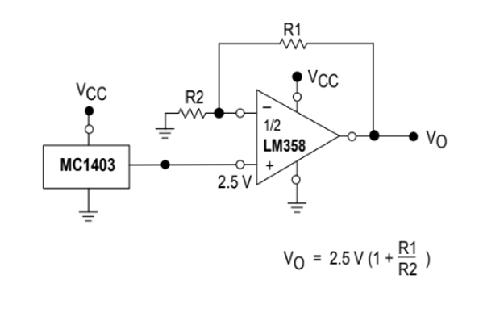
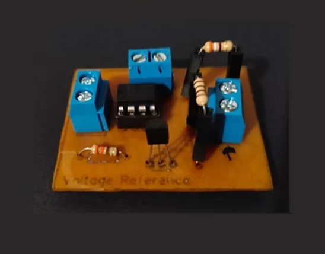

Placas de aprendizaje sobre el amplificador operacional
Se nos presenta una problemática relacionada con las dificultades que enfrentan las personas al aprender sobre amplificadores operacionales. Por ello, se propone desarrollar una placa de aprendizaje que integre los elementos necesarios para que estudiantes de ingeniería electrónica o entusiastas puedan dominar el uso de este dispositivo de manera práctica y eficiente. Para lograrlo, será fundamental seleccionar cuidadosamente los circuitos más adecuados a las necesidades de quienes deseen adquirir este conocimiento.
De una lista de circuitos aplicativos que utilizan este dispositivo, se permitió seleccionar únicamente dos o más para su estudio. Debido al tiempo limitado para completar la tarea, el equipo optó por analizar dos circuitos, los cuales incluyen todo lo necesario para cumplir con los objetivos de aprendizaje. En esta etapa del proyecto, se enfocarán en analizar los circuitos seleccionados y probar cada uno de manera independiente.
Siendo un equipo de cinco integrantes, se dividió el trabajo de manera estratégica. Dos miembros del equipo realizaron los cálculos necesarios para ambos circuitos, mientras que otros dos se encargaron de realizar las pruebas en laboratorio y las simulaciones correspondientes. Finalmente, el quinto integrante asumió la responsabilidad del diseño del PCB para los circuitos.
Circuito de voltaje de referencia:
Este circuito se comporta como una fuente de voltaje de corriente directa de alta precisión, lo que es muy útil para situaciones en las que se necesita un voltaje fijo y que no sufra variaciones.
Entre los materiales utilizados, incluye un amplificador operacional, resistencias, y un generador de referencia de voltaje, como el MC1403 o un diodo zener. En este diseño, se utilizó un LM358 y, debido a la escasez del MC1403, se reemplazó por un diodo zener TL431, que genera un voltaje estable de 2.5V. El divisor de tensión está compuesto por dos resistencias (1kΩ cada una) que definen la ganancia del circuito según esta fórmula:
\begin{equation*} V_{out} = V_{ref} \times \left( 1 + \frac{R_2}{R_1} \right) \end{equation*}Además, la corriente a través del zener se calcula con la fórmula:
\begin{equation*} Iz = (Vin - Vz) / R \end{equation*}Donde Vin es el voltaje de entrada (12V), Vz es el voltaje del zener (2.5V) y R es la resistencia limitadora de corriente (330Ω). Esto da una corriente de 29mA, lo que asegura la estabilidad del zener. El diseño final incluye puertos de conexión para que el usuario pueda cambiar las resistencias según sus necesidades.
Esquemático del circuito para implementar en PCB:
El diseño de la PCB se realizó en el programa EasyEDA, incluye características que permiten la personalización del circuito para distintas aplicaciones. Se añadieron puertos de conexión en los puntos de las resistencias R1 y R2, permitiendo al usuario ajustar sus valores según las necesidades del circuito, sin alterar la estructura base de la PCB. Para garantizar una referencia de voltaje estable, se utilizó una resistencia fija en la conexión del zener, lo que mantiene el voltaje de referencia sin necesidad de ajustes adicionales.
Diseño del PCB:
En el siguiente enlace se encuentra el diseño del circuito y el esquema de la placa de aprendizaje: Circuito-Referencia-Voltaje-LM358
Finalmente, se pasó este diseño a la vida real, usando una baquela para conectar todos los componentes del circuito y se realizó la medición:
Diseño en baquela:
Mediciones:
Durante las pruebas, el voltaje de salida del zener se mantuvo estable en 2.5V, mientras que el voltaje de salida en el amplificador operacional LM358 variaba según los ajustes de las resistencias R1 y R2. En la configuración de prueba inicial, se obtuvo un voltaje de salida de 5V, manteniendo la estabilidad esperada, ya que estábamos multiplicando el voltaje de la salida del zener por 2.
Filtro pasabanda con retroalimentación múltiple:
Un filtro pasabandas se utiliza para permitir el paso de señales dentro de un rango específico de frecuencias mientras atenúa las señales fuera de este rango. Este filtro es esencial en sistemas de comunicación y procesamiento de señales, donde es necesario seleccionar frecuencias deseadas y eliminar el ruido o interferencias no deseadas. La precisión del filtro pasabandas se logra mediante el uso de componentes como resistencias, capacitores y, en algunos casos, amplificadores operacionales, que definen parámetros clave como la frecuencia central y el ancho de banda, garantizando un rendimiento óptimo incluso en condiciones de ruido o variaciones en la señal.
El filtro pasabandas es un circuito utilizado para permitir el paso de señales dentro de un rango específico de frecuencias, mientras atenúa las señales fuera de este rango. A continuación, se detallan las ecuaciones clave involucradas en su diseño y funcionamiento:
Voltaje de referencia: El voltaje de referencia en el filtro pasabandas se calcula como la mitad del voltaje de alimentación. Esto se expresa de la siguiente manera:
\begin{equation*} V_{ref} = \frac{V_{CC}}{2} \end{equation*}Este voltaje de referencia establece un nivel para el amplificador operacional, asegurando que el filtro funcione correctamente. Frecuencia central La frecuencia central, que es la frecuencia en la que la ganancia del filtro es máxima, se determina mediante la siguiente fórmula:
\begin{equation*} f_{0} = \frac{1}{2 \pi \ R1 \ R3\ C} \end{equation*}Aquí, R1, R3, y C son los componentes principales que definen la frecuencia en la que se obtiene la máxima ganancia. Ajustando estos valores, se puede controlar la frecuencia central del filtro. La ganancia en la frecuencia central se calcula con la fórmula:
\begin{equation*} G_{0} = \frac{R3}{2*R2} \end{equation*}Esto nos da la relación entre las resistencias R1 y R3, determinando la amplificación de la señal en la frecuencia central. Resistencia R2 La resistencia R2, que es otro parámetro clave en el diseño, se calcula con la siguiente fórmula:
\begin{equation*} R2 = \frac{R1 \ R3}{4 Q^2 (R1 - R3)} \end{equation*}Esta ecuación muestra cómo las resistencias R1 y R3, junto con el factor de calidad Q, determinan el valor de R2. El factor Q influye en la selectividad y el ancho de banda del filtro. Factor de calidad Q El factor de calidad, que indica la selectividad del filtro, se calcula utilizando la siguiente fórmula:
\begin{equation*} Q = \frac{f_{0}}{BW} \end{equation*}Donde BW es el ancho de banda del filtro. Un valor alto de Q indica una mayor selectividad, lo que significa un filtro más estrecho y preciso, mientras que un valor bajo de Q indica un filtro con un ancho de banda más amplio.
Relación entre las ecuaciones:
Estas ecuaciones están interconectadas en el diseño de un filtro pasabandas, ya que todas influyen en la respuesta de frecuencia del circuito. Al manipular las resistencias R1, R2, y R3, así como el condensador C, es posible ajustar tanto la frecuencia central \(f_0\) como la ganancia en esa frecuencia. La frecuencia central \(f_0\), calculada con la fórmula \(f_0 = \frac{1}{2 \pi \ R1 \ R3 \ C}\), define la frecuencia en la que la ganancia del filtro es máxima. La ganancia en la frecuencia central, dada por \(G_{0} = \frac{R3}{2 \ R1}\), depende directamente de las resistencias R1 y R3, y se puede ajustar para controlar la amplitud de la señal en esa frecuencia.
La resistencia R2, determinada por la fórmula \(R2 = \frac{R1 \ R3}{4 \ Q^2 \ (R1 - R3)}\), está relacionada con las resistencias R1 y R3, así como con el factor de calidad \(Q\), que tiene un impacto importante en el comportamiento del filtro. El factor \(Q\) se calcula mediante \(Q = \frac{f_0}{BW}\), donde \(BW\) es el ancho de banda. Un \(Q\) alto significa un filtro más selectivo, con un ancho de banda más estrecho, mientras que un \(Q\) bajo indica un filtro con mayor ancho de banda.
Esquemático del circuito diseñado:
Teniendo el esquemático, podemos realizar el diseño del PCB. El diseño de la PCB para el filtro pasabandas incluye características que permiten la personalización del circuito para distintas aplicaciones. Se añadieron puertos de conexión en los puntos de las resistencias R1, R2 y R3, así como en el condensador C2, lo que permite al usuario ajustar sus valores según las necesidades del circuito, sin alterar la estructura base de la PCB. Esto facilita la modificación de la frecuencia central (\(f_0\)) y la ganancia del filtro sin la necesidad de rediseñar todo el sistema. Además, se incluyó un diseño optimizado para asegurar un factor de calidad (\(Q\)) adecuado, lo que proporciona una selectividad óptima para las señales de interés. Para garantizar el correcto funcionamiento del filtro, se usaron resistencias y condensadores de alta precisión que aseguran un rendimiento estable a lo largo del tiempo. El diseño también permite ajustes finos en la selectividad del filtro, brindando flexibilidad al usuario para adaptarse a diferentes aplicaciones. Puedes obtener el esquema completo del circuito en el siguiente enlace: Circuito-Filtro-Pasabandas-LM358
Mediciones:
1. Frecuencia de 1.03 kilohertz: - La señal de entrada tiene una amplitud de 620 milivoltios, mientras que la señal de salida muestra una amplitud de 1.34 voltios. - Este comportamiento indica que el filtro permite el paso de esta frecuencia con amplificación significativa, confirmando que 1.03 kilohertz se encuentra dentro de la banda de paso.
2. Frecuencia de 217 hertz: - La señal de entrada tiene una amplitud
de 200 milivoltios y la salida muestra una amplitud de 720
milivoltios, significativamente menor que la señal a 1.03
kilohertz.
- Esto demuestra que el filtro atenúa frecuencias fuera de la banda de
paso, como se esperaba para 217 hertz.
Como conclusión, el filtro pasa bandas diseñado cumple su función al amplificar señales dentro de su banda de paso, alrededor de 1.03 kilohertz, y atenuar señales fuera de esta, como en el caso de 217 hertz. Los resultados son consistentes con el comportamiento esperado de un filtro pasa bandas activo.
Una vez analizados y probados los dos circuitos seleccionados, podemos dar paso a la siguiente etapa del proyecto, que consiste en realizar la placa de aprendizaje, para continuar con la lectura de este interesante proyecto, puedes buscar en esta página el post "Diseño final de la placa de aprendizaje en PCB".